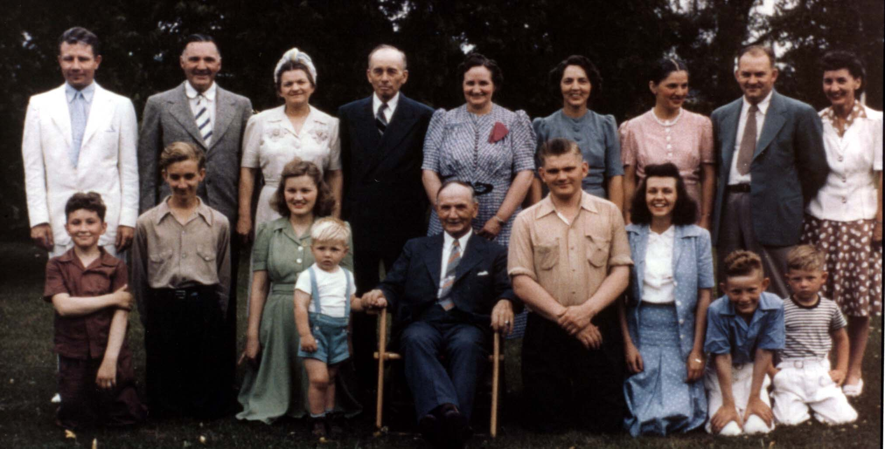

Here's a photograph of some of Alfred WYSS and some of his descendants taken ca. 1941. His daughter, Milda Elizabeth nee WYSS MILLER, has identified them as follows:
BACK ROW (left to right):
William Jerome RUDGE Jr., Lionel Wenzell WYSS (Leo Wyss Sr.), Cele nee JOHNSON WYSS, Otto BRACKER, Olive nee WYSS BRACKER, Esther nee WYSS BURRIDGE, Milda nee WYSS MILLER, Elwood "Cracker" MILLER, Anne nee WYSS RUDGE.
FRONT ROW:
Richard BRACKER, Carlton BRACKER, Charlotte nee WYSS CARR, John MILLER, Alfred WYSS, Leo Winton WYSS, Barbara SWEENEY, William Jerome RUDGE III, Wyss MILLER.
Milda relates the following story in a letter to William Jerome Rudge III about the picture: "This was to be a family picture since we were all present. If you remember, your Aunt Esther would get very upset at times. Especially when things didn't go her way. Since I was the only one who could cope with these 'mental breakdowns' I spent 40 years rushing to Croton and Cadillac to help her. On this day, she didn't want Barbara in this picture because she was just a 'girl friend' Leo Winton brought with him-not family. In the end they were married so it turned out O.K."
Last updated on 6 Jun 1999.